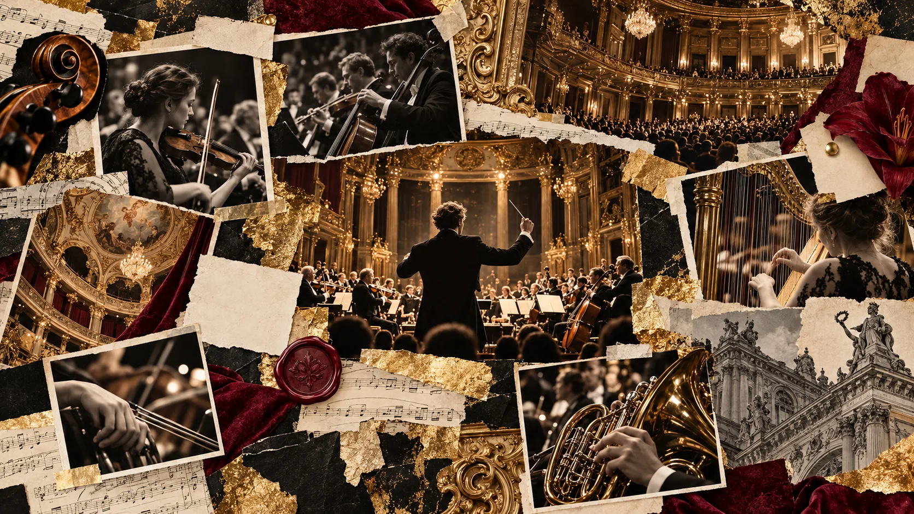

VALLEYS SYMPHONY ORCHESTRAPartners & patrons
Партнёры
Культура развивается через долгосрочное сотрудничество.
V / S — 2026
КУЛЬТУРНЫЙ ДИАЛОГPartnership
Создавать вместе.
Мы открыты к профессиональному диалогу с филармониями, фестивалями, культурными институциями и представителями бизнеса.
01 / GENERAL
Генеральные партнёры
Место для согласованных логотипов и информации о сотрудничестве.
02 / CULTURE
Культурные партнёры
Резиденции, оркестры, театры, фестивали и филармонические площадки.
03 / MEDIA
Информационные партнёры
Профессиональные медиа и культурные издания.
VALLEYS CULTURAL GROUPThe ecosystem
Единая культурная экосистема
VALLEYSSYMPHONY ORCHESTRA
THE VALLEYSMUSICAL AGENCY · КОНЦЕПЦИЯ
OPERAPROFESSIONAL · КОНЦЕПЦИЯ
CREATIVEDEVELOPMENT STUDIO